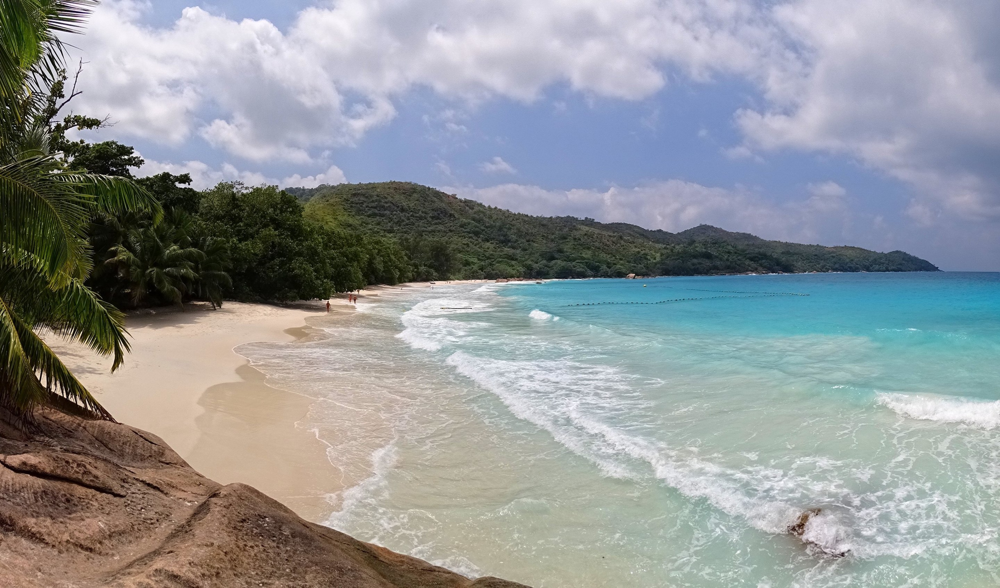

A Vacation to Remember
Why come to the Seychelles?
The Seychelles Offers its pristine beaches, crystal-clear waters,
and lush rainforests, where you can relax in paradise and experience
unique wildlife unlike any other.
What is there to do?
The Seychelles offers a variety of activities for travelers of all
interests, including swimming, sunbathing, snorkeling, diving
hiking, fishing, and island hopping. You can also visit UNESCO
World Heritage Sites, rainforest explorations, and learn about
the country's unique culture.
Where can I go?
 Anse Lazio, Praslin:
This beach is often ranked as one of the most beautiful in the world,
with its soft white sand, crystal-clear water, and granite boulders.
Anse Source d'Argent, La Digue:
This beach is famous for its soothing sand, turquoise water, and
glistening boulders. It is one of the most photographed beaches
in the world.
Vallée de Mai Nature Reserve, Praslin:
This UNESCO World Heritage Site is home to the coco de mer palm tree,
which produces the largest seed in the plant kingdom. The reserve is also
home to a variety of other flora and fauna, including the Seychelles black
parrot.